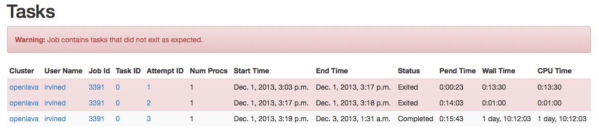
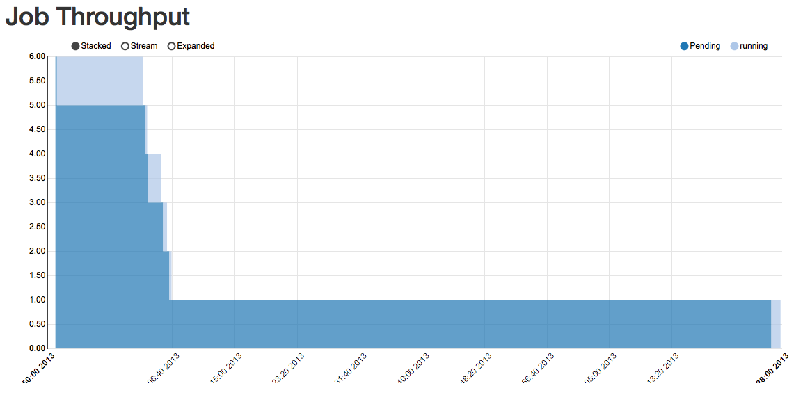

Features¶
Capacity and Contention Management¶
Charts and tables showing demand (Requested capacity) with a accurate resolution promote data driven decisions for capacity management. Charts can be broken down by fields such as user, project, queue, job size and cluster, or rolled up to show global demand across the organization. Charts can be filtered to show only data for specific metrics, such as a project or queue. Alternatively metrics can be excluded in order to show demand for just the specific data needed.

Actual utilization (Delivered capacity) with a one-minute resolution make it easy to see who used what capacity. Combined with the capacity management graphs, this provides insight into who is getting access to your HPC clusters. Graphs make it clear how much capacity was actually delivered, and makes it easy to demonstrate the effectiveness of any sharing policies in place.

View aggregated information on job submission times, this shows when users are most active on the cluster. Compare this with job throughput information to understand how your cluster is used.

Charts of job resource usage provide an overview of consumed resources during the jobs execution. Tasks that ran on the same hosts at the same time. When physical resources are shared between multiple jobs, enables users and admins to find jobs that may have used more than their fair share.
Job Information¶
The job view shows detailed information on jobs that have finished, including graphs of pending time, resource usage, and exit status for each task. Detailed information on job submission and execution information is available. Support staff and end users benefit from detailed information on the job submission and execution requirements.
Job view highlights potential problems with the job, such as failed tasks, and tasks with a very short run time.

The job flow diagram shows how jobs, tasks, queues, hosts, and clusters relate to the job.
Job Throughput shows the state of each task in the job, and shows how the job was processed by the scheduler. Job throughput charts help users with job arrays see the how long each task was pending for. Job Search makes it easy to find details about specific jobs. Both users and admins can easily interrogate the cluster for detailed information about jobs.
Powerful Filters¶

Use include and exclude features to show filter on any data metric to create a report with the exact data you want to see. Set a range of values either by selecting them, (Such as a submit week) or by using an operator such as selecting jobs with a high pend time.